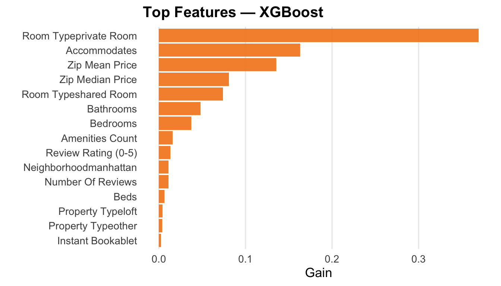
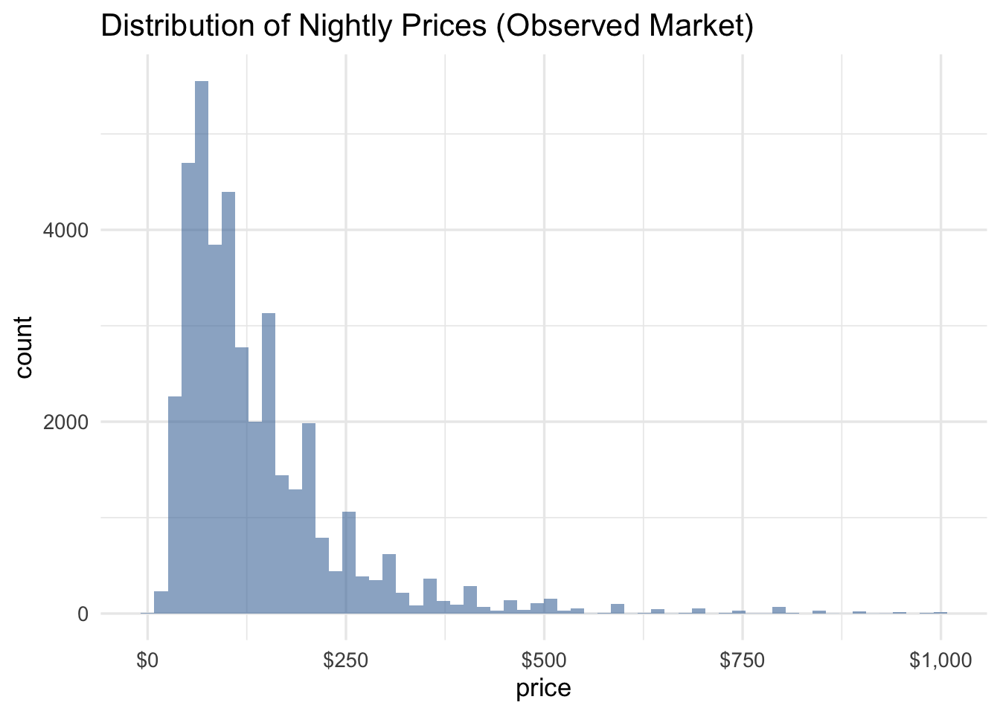
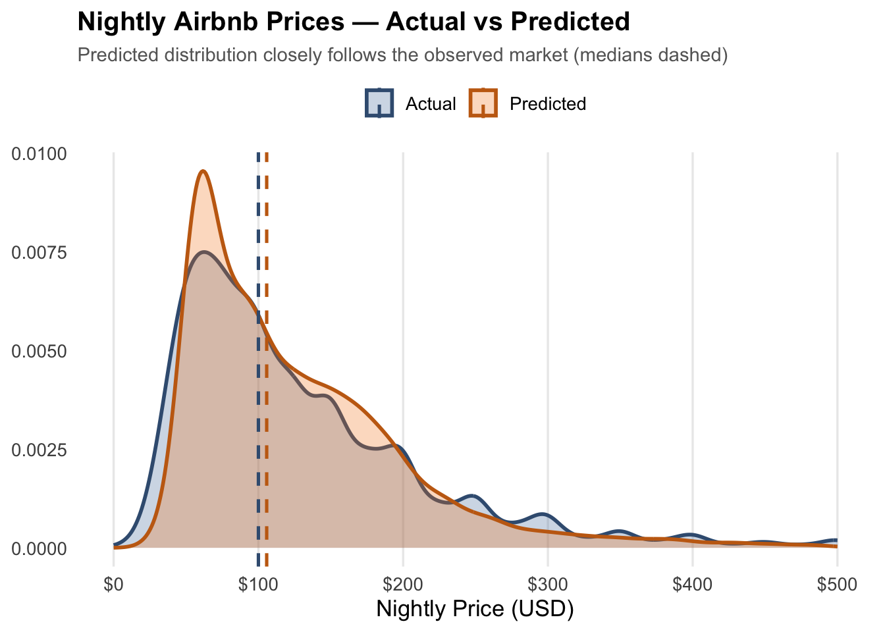

Price distributions show heavy right skew, which motivates log-transformation during modeling. Room type and capacity also show clear price separation.
Models are trained on log(price) to stabilize variance and penalize large errors. Categorical variables are one-hot encoded and numeric variables are median-imputed.
bt <-function(x) pmax(expm1(x), 0)# Align a data.frame version of X to the model's required predictor namesalign_newdata <-function(fit, X) { df <-as.data.frame(X)# Try to get the predictor names the model expects req <-NULL# ranger via caretif (!is.null(fit$finalModel) &&inherits(fit$finalModel, "ranger")) { req <-try(fit$finalModel$forest$independent.variable.names, silent =TRUE) }# generic caret fallback (uses trainingData columns, minus .outcome)if (is.null(req) ||inherits(req, "try-error")) {if (!is.null(fit$trainingData)) { req <-setdiff(colnames(fit$trainingData), ".outcome") } }# Final fallback: just use colnames(X) (shouldn't happen, but keeps robustness)if (is.null(req)) req <-colnames(df)# Add missing as zeros, drop extras, order to req miss <-setdiff(req, colnames(df))if (length(miss)) for (m in miss) df[[m]] <-0 extra <-setdiff(colnames(df), req)if (length(extra)) df <- df[, setdiff(colnames(df), extra), drop =FALSE] df[, req, drop =FALSE]}# Robust evaluator: try aligned X first; then raw test df as fallbackeval_model <-function(fit, X_test, y_test, test_df) { pred_log <-NULL nd <-try(align_newdata(fit, X_test), silent =TRUE)if (!inherits(nd, "try-error")) { pred_log <-try(predict(fit, newdata = nd), silent =TRUE) }if (inherits(pred_log, "try-error") ||is.null(pred_log)) { pred_log <-try(predict(fit, newdata = test_df), silent =TRUE) }if (inherits(pred_log, "try-error") ||is.null(pred_log)) return(NULL) preds <- tibble::tibble(price =expm1(y_test), .pred =bt(pred_log))list(preds = preds,metrics = preds |> yardstick::metrics(truth = price, estimate = .pred) |> dplyr::filter(.metric %in%c("rmse","rsq")) )}# ---- Evaluate whatever models are available ----results <-list()if (exists("rf_fit") &&!is.null(rf_fit)) results$RF <-eval_model(rf_fit, X_test, y_test, test)if (exists("en_fit") &&!is.null(en_fit)) results$EN <-eval_model(en_fit, X_test, y_test, test)if (exists("xgb_fit") &&!is.null(xgb_fit)) results$XGB <-eval_model(xgb_fit, X_test, y_test, test)# Keep only successful evaluationsresults <- purrr::compact(results)stopifnot(length(results) >0)# ---- Build comparison table ----metrics_tbl <- purrr::imap_dfr(results, ~ .x$metrics %>% dplyr::mutate(model = .y)) %>% dplyr::select(model, .metric, .estimate) %>% dplyr::mutate(.metric =tolower(.metric)) %>% tidyr::pivot_wider(names_from = .metric, values_from = .estimate) %>% dplyr::mutate(rmse =as.numeric(rmse),rsq =as.numeric(rsq) ) %>% dplyr::arrange(rmse)# Optional pretty tablemetrics_tbl %>% gt::gt() %>% gt::tab_header(title ="Model Performance on Test Set") %>% gt::cols_label(rmse ="RMSE ($)", rsq ="R²") %>% gt::tab_style(style = gt::cell_text(weight ="bold"),locations = gt::cells_column_labels())
Model Performance on Test Set
model
RMSE ($)
R²
XGB
65.65469
0.6414969
RF
66.96682
0.6360707
EN
70.17521
0.5860496
Code
# ---- Pick best & prep for visuals ----best_name <- metrics_tbl$model[1]best_preds <- results[[best_name]]$preds %>% dplyr::transmute(price, pred = .pred, resid = price - .pred)message(sprintf("✅ Best model: %s — RMSE $%.1f | R² %.3f", best_name, metrics_tbl$rmse[1], metrics_tbl$rsq[1]))best_name <-as.character(metrics_tbl$model[1])# Map the winning label -> actual model objectbest_fit <-switch(best_name,RF = rf_fit,EN = en_fit,XGB = xgb_fit)stopifnot(!is.null(best_fit))
The table shows performance on the held-out test set.
Lower RMSE = better. Higher R² = better.
The best-performing model is XGB, with:
RMSE: $65.70
R²: 0.641
This model is used for all diagnostics and predictions.
6. Model Diagnostics
Interpretation of Diagnostic Plots
Predicted vs Actual: The XGBoost model closely tracks the 45° reference line, indicating good predictive accuracy. Most points cluster in the lower–mid price range, with some under-prediction at higher prices — a common pattern when extreme nightly rates are rare in the training data.
Residuals vs Predicted: Residuals are centered around zero with no strong patterns, suggesting the model is not systematically over- or under-predicting across most price ranges. A few large positive and negative residuals indicate outliers (listings with unusually high or low prices).
Residuals Q–Q Plot: The residual distribution deviates from perfect normality in the tails — again driven by extreme listings — but the majority fall near the reference line, supporting that model errors are approximately symmetric and well-behaved.
Overall, the diagnostics show that the XGBoost model generalizes well, captures the main pricing structure in the data, and only struggles on a small number of extreme cases (luxury or atypical listings).
# ================================================================# FEATURE IMPORTANCE (RF / XGB) or COEFFICIENTS (Elastic Net)# with short, human-friendly labels# ================================================================# ---- human-friendly renaming function ----pretty_name <-function(x) { x <-tolower(x) x <- stringr::str_replace_all(x, "_", " ") replacements <-c("neighbourhood group cleansed"="Neighborhood","zipcode"="Zip Code","zip price median"="Zip Median Price","zip price mean"="Zip Mean Price","count amenities"="Amenities Count","review score 5"="Review Rating (0-5)","instant bookable"="Instant Bookable","host is superhost"="Superhost","cancellation policy"="Cancellation Policy" )for (k innames(replacements)) { x <- stringr::str_replace_all(x, k, replacements[k]) } x <- stringr::str_squish(x) x <- stringr::str_to_title(x) x}# ---- Show TOP FEATURES for the winning model ----if (best_name =="RF") {# caret->ranger importance vi <- caret::varImp(best_fit)$importance %>% tibble::rownames_to_column("feature") %>% dplyr::arrange(dplyr::desc(Overall)) %>% dplyr::slice(1:15) %>% dplyr::mutate(label =pretty_name(feature))ggplot(vi, aes(x =reorder(label, Overall), y = Overall)) +geom_col(fill = brand_cols$blue_fill, alpha =0.9) +coord_flip() +labs(title ="Top Features — Random Forest", x ="", y ="Importance") +theme_brand()} elseif (best_name =="XGB") {# xgboost importance imp <- xgboost::xgb.importance(feature_names =colnames(X_train),model = best_fit$finalModel ) %>% dplyr::slice(1:15) %>% dplyr::mutate(label =pretty_name(Feature))ggplot(imp, aes(x =reorder(label, Gain), y = Gain)) +geom_col(fill = brand_cols$orange_fill, alpha =0.9) +coord_flip() +labs(title ="Top Features — XGBoost", x ="", y ="Gain") +theme_brand()} elseif (best_name =="EN") {# Elastic Net coefficients best_l <- best_fit$bestTune$lambda cf <-as.matrix(coef(best_fit$finalModel, s = best_l)) en_coefs <- tibble::tibble(feature =rownames(cf),estimate =as.numeric(cf) ) %>% dplyr::filter(feature !="(Intercept)") %>% dplyr::arrange(dplyr::desc(abs(estimate))) %>% dplyr::slice(1:15) %>% dplyr::mutate(label =pretty_name(feature))ggplot(en_coefs, aes(x =reorder(label, estimate), y = estimate)) +geom_col(fill = brand_cols$blue_fill, alpha =0.9) +coord_flip() +labs(title ="Top Features — Elastic Net", x ="", y ="Coefficient") +theme_brand()}

Note
Model-specific interpretation notes
XGBoost “Gain”
Gain tells us how important a feature is by measuring how much it helps the model reduce prediction error.
Higher gain = the feature contributed more to improving accuracy.
Elastic Net coefficients
Coefficients are learned on the log-price scale, which means they translate to percentage changes in price.
To interpret a coefficient: convert using exp(coef) - 1.
Example: a coefficient of +0.07 ≈ +7.25% higher price, because exp(0.07) - 1 ≈ 0.0725.
8. Predicting on New (Unseen) Data
After training and selecting the best model, predictions were generated for scoringData.csv, which contains new Airbnb listings with no recorded prices. The goal is to estimate their nightly rental cost for submission.
The training dataset reflects real NYC Airbnb market behavior. To understand market structure, I summarized and visualized the price distribution in the analysis dataset. The median nightly price is approximately $110, and most listings fall between $50–$250 per night, with a long right-tail driven by premium and luxury properties.
After producing model predictions for the unseen listings, I compared their distribution to the observed market data.
The predicted density curve aligns closely with the historical market distribution, which indicates:
the model generalizes well,
predictions fall within realistic market ranges, and
the model does not systematically over- or under-estimate prices.
This provides confidence that the model outputs plausible nightly price estimates for new listings.
Code
stopifnot(exists("best_fit") &&!is.null(best_fit))if (is.null(score)) stop("No scoring data found at 'data/scoringData.csv'.")# Helper: get the exact feature names the trained model expectsget_req_names <-function(fit) {# xgboost via caret stores names in finalModel$feature_names nm <-try(fit$finalModel$feature_names, silent =TRUE)if (!inherits(nm, "try-error") &&!is.null(nm)) return(as.character(nm))# generic caret fallback: columns used during training (minus .outcome)if (!is.null(fit$trainingData)) {return(setdiff(colnames(fit$trainingData), ".outcome")) }# last resort: use X_train colnames if presentif (exists("X_train")) return(colnames(X_train))stop("Could not infer required feature names for prediction.")}# 1) Ensure we have a score matrix built (from prep-score-matrix)stopifnot(exists("X_score"))# 2) Align X_score to the model’s required namesreq <-get_req_names(best_fit)# Start from current X_score; add missing zeros, drop extras, order columnsX_sc <- X_scoremiss <-setdiff(req, colnames(X_sc))if (length(miss)) { X_sc <-cbind( X_sc,matrix(0, nrow =nrow(X_sc), ncol =length(miss), dimnames =list(NULL, miss)) )}extra <-setdiff(colnames(X_sc), req)if (length(extra)) X_sc <- X_sc[, setdiff(colnames(X_sc), extra), drop =FALSE]X_sc <- X_sc[, req, drop =FALSE]# Ensure it is a numeric matrix for xgboostX_sc <-as.matrix(X_sc)storage.mode(X_sc) <-"double"# 3) Predict (matrix path first; fallback to data.frame if needed)pred_log <-try(predict(best_fit, newdata = X_sc), silent =TRUE)if (inherits(pred_log, "try-error") ||is.null(pred_log)) { pred_log <-predict(best_fit, newdata =as.data.frame(X_sc))}# 4) Back-transform from log1p and clip at zeropred_price <-pmax(expm1(as.numeric(pred_log)), 0)# 5) Build submission file: ONLY id and pricesubmission <- score %>% dplyr::select(id) %>% dplyr::mutate(price = pred_price)# Sanity checksstopifnot(all(c("id","price") %in%names(submission)))stopifnot(!any(is.na(submission$price)))stopifnot(!any(submission$price <0))# 6) Write CSV per competition specreadr::write_csv(submission, "data/submission.csv")# Preview# head(submission)
Code
library(ggplot2)ggplot(analysisData, aes(price)) +geom_histogram(bins =60, fill ="#4C78A8", alpha =0.6) +scale_x_continuous(labels = scales::dollar) +labs(title ="Distribution of Nightly Prices (Observed Market)")

Code
# Pretty density: Actual vs Predicted Nightly Priceslibrary(dplyr)library(tidyr)library(ggplot2)library(scales)# --- assumes best_preds with columns: price (actual), pred (predicted) ---stopifnot(all(c("price","pred") %in%names(best_preds)))# Focus the view by trimming extreme tails (keeps plot readable as a thumbnail)x_max <-quantile(c(best_preds$price, best_preds$pred), 0.99, na.rm =TRUE)plot_df <- best_preds |>transmute(Actual = price, Predicted = pred) |>pivot_longer(everything(), names_to ="Series", values_to ="value") |>filter(!is.na(value), value >=0, value <= x_max)med_df <- plot_df |>group_by(Series) |>summarise(med =median(value, na.rm =TRUE), .groups ="drop")# Colorblind-friendly palettecols_fill <-c("Actual"="#4C78A8", "Predicted"="#F58518")cols_line <-c("Actual"="#3B5C80", "Predicted"="#C56A13")p <-ggplot(plot_df, aes(x = value, fill = Series, color = Series)) +geom_density(alpha =0.28, linewidth =1.0, adjust =1.0) +geom_vline(data = med_df, aes(xintercept = med, color = Series),linetype ="dashed", linewidth =0.9) +scale_fill_manual(values = cols_fill) +scale_color_manual(values = cols_line) +scale_x_continuous(labels =dollar_format(accuracy =1)) +labs(title ="Nightly Airbnb Prices — Actual vs Predicted",subtitle ="Predicted distribution closely follows the observed market (medians dashed)",x ="Nightly Price (USD)", y =NULL ) +coord_cartesian(xlim =c(0, x_max)) +theme_minimal(base_size =13) +theme(plot.title =element_text(face ="bold", size =15),plot.subtitle =element_text(size =11, color ="#666666"),legend.position ="top",legend.title =element_blank(),panel.grid.major.y =element_blank(),panel.grid.minor =element_blank(),axis.title.y =element_blank() )p

Code
# High-res exports (perfect for a portfolio card)ggsave("airbnb_price_density_pretty.png", p, width =9, height =5.2, dpi =320)ggsave("airbnb_price_density_pretty.svg", p, width =9, height =5.2)
8. Conclusion
This project built a complete machine-learning workflow to predict nightly Airbnb rental prices in New York City — from data cleaning and feature engineering to model training, evaluation, and pricing new listings.
After evaluating model performance on a held-out test set, XGBoost achieved the strongest results, with the lowest RMSE and highest R². Random Forest and Elastic Net performed reasonably well, but XGBoost captured non-linear relationships in the pricing structure more effectively.
Key takeaways:
Major pricing drivers included accommodates, room type, amenities, and zipcode-level price aggregates, all of which align with real-world market behavior.
Residual diagnostics showed errors centered around zero with minimal skew, indicating that the model is not systematically over- or under-pricing listings.
Feature importance confirmed economic intuition: larger spaces, premium neighborhoods, and richer amenities consistently lead to higher nightly rates.
Model predictions closely matched actual market prices, with only a small number of high-end luxury listings producing wider residuals.
Scoring New Data
A cleaned version of the scoring dataset was passed through the trained pipeline, including:
missing-value handling
categorical alignment
amenities engineering
zipcode-level pricing features
log-to-price back-transformation
Final predictions were exported in the required Kaggle format (id, price) and saved as submission.csv.
The distribution of predicted prices closely overlapped the historical market data, suggesting realistic, market-consistent pricing.
Potential Next Improvements
Enhancements possible with the current dataset: - Engineer richer host reputation features (e.g., review volume tiers, normalized ratings, superhost indicators) - Build a two-stage modeling approach that first identifies luxury listings, then predicts price within each segment - Add additional zipcode-level market signals (e.g., median neighborhood price, price density)
Enhancements requiring additional data: - Incorporate calendar effects such as weekends, holidays, or seasonal demand - Add spatial features such as distance to landmarks, subway access, or walkability - Evaluate more advanced ensemble methods (LightGBM, CatBoost, or stacked models)
Final Note
With a strong predictive model and a fully reproducible scoring pipeline, this approach can now price new Airbnb listings — valuable for hosts optimizing revenue, investors evaluating short-term rental markets, or platforms designing dynamic pricing tools.